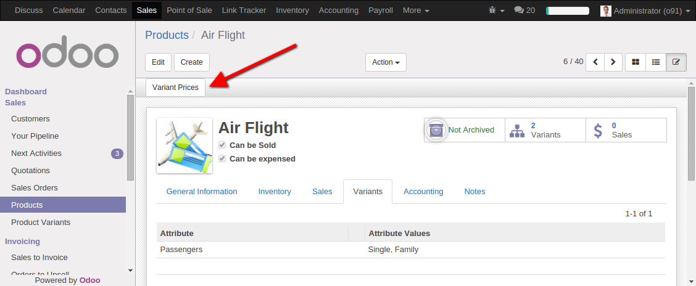
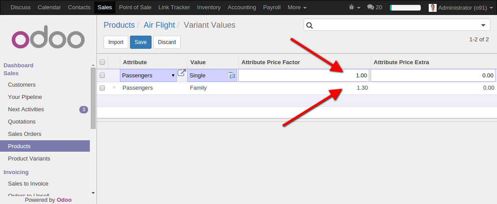
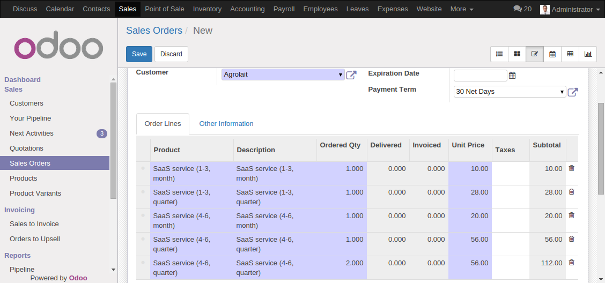
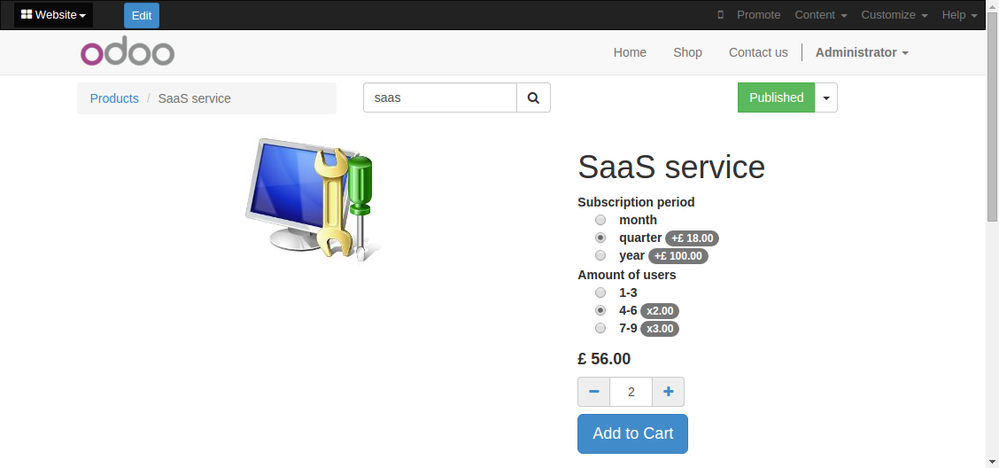

<section class="oe_container">
    <div class="oe_row oe_spaced">
        <div class="oe_span12">
            <h2 class="oe_slogan">Product price multiplier</h2>
            <h3 class="oe_slogan">Variate your product prices with
                multiplier</h3>
            <p>This module was designed for our Saas portal sale module to
                customize SaaS prices.
                The task was to manage prices with regards of the maximum
                number of users attribute along with the
                subscription period attribute. Price should be first increased
                according to subscription period and then
                the result should be multiplied according to maximum number of
                users.
                Odoo product.product model by itself has no ability to multiply
                prices depending on product variants.
                There is only addition implemented. So this module gives this
                ability.
                It can be used also in cases where some percents should be
                applied coherently on a price.
            </p>
            <h4>Instruction</h4>
            <div class="oe_row_img oe_centered oe_mt32">
                <p>First of all enter in debug mode and mark "Manage product
                    variants" checkbox in your user
                    settings.</p>
                
                <p>Then open the Variants tab of your Product and create
                    attributes with values. Important thing here is
                    the order of attributes. When price is calculated the first
                    attribute is processed first. The second
                    attribute calculation takes the previous step result and
                    adds and multiplies on it and so on. You
                    can reorder the attributes by drag&drop them in form's edit
                    mode. Move your mouse pointer on the
                    column between the "Attribute" and "Attribute values"
                    columns then grab and position the line as
                    needed.
                </p>
                
                <p>Then you will see "Variant Prices" button. Press it. </p>
                
                <p>You got to fill this table according to your needs. Consider
                    attribute's price factor value as a
                    multiplier. It can be any number except zero.
                    By example: we sale SaaS Service with one month
                    subscription period and 3 users maximum. This
                    variant of product should cost 10$. Base price for this
                    product also 10$. We have there 1.0 price
                    factor and 0.0 price extra for each of our two attributes.
                    After 0.0 addition and multiplication by
                    1.0 the price obviously should stay the same. So this is
                    base variant of product.
                    Further we want to multiply our price by 2 for the same
                    product with 6 users maximum variant. For
                    this case we leave the same values for monthly subscription
                    and place 2.0 in the price factor field
                    of Number of users attribute value 6. And so on.
                </p>
                
                <p>Create new sale order and add items like on the screenshot
                    below. Here you can see how attributes
                    affect the price. For example the price of the Quarter
                    Subscription variant of service with 6 users
                    limit is calculated like this: (10+18)*2=56. I.e. basic
                    price plus Subscription period variant extra
                    price multiplied on price factor 2.0 assigned for 6 users.
                </p>
                
                <p>If you using e-commerce (shop) module you also may install
                    product_price_factor_online module to see new product
                    options in yours web store.</p>
                
            </div>
        </div>

    </div>
</section>
